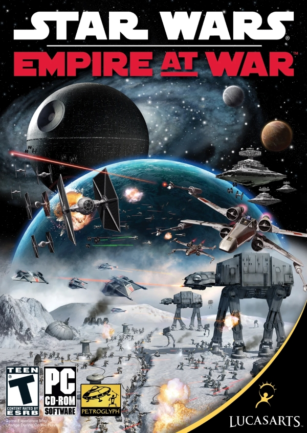

My Favorite Video Game
My favorite game of all time has to be Star Wars Empire at War. It is an RTS game that came out around 2006. Unlike most movie based video games this one was actually a success. It has both land and space battles which I think is really neat since most strategy games that I have seen only feature one type of battle. In my opinion it is still has some of the best space battles of any strategy game to date. I’ve been playing this game since I was 6 years old and it has been a big part of my childhood. The game has aged quite a bit and it shows but it has a very active community that has kept it alive through modding over the years. The mods are the best part of the game and some of them completely change how the game looks and completely overhaul it's visuals. I do still enjoy playing the game without mods but at this point I have over 1000 hours in total logged into this game so I usually end up modding the game.